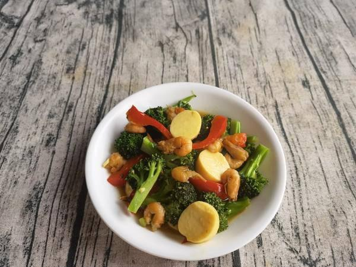
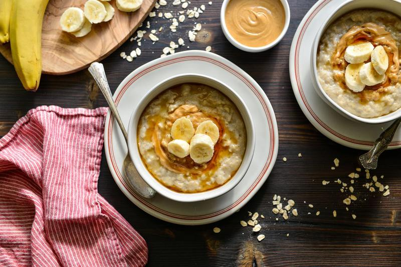

好食材 · 好烹调 · 好生活
今天吃什么？
让食材替你决定。
从冰箱里的食材出发，找到今天最适合你的一餐。

今天吃什么
为你推荐 3 道适合今日的美味
从你的冰箱开始
选择食材，看看能做什么菜
AI 智能推荐
不知道吃什么？
告诉我你的时间、预算和口味
菜谱库
8 道基础菜谱
没有找到匹配的菜谱，换个关键词试试。
探索世界食材
来自全球的优质食材，了解它们的故事与营养价值
一周怎么吃
切换日期，查看三餐搭配示例
从一棵菜，到一桌菜
先看有什么，
再决定怎么做。
按食用部位和烹饪用途整理常见食材，覆盖蔬果、粮豆、肉蛋奶、水产、干货与调味。点开食材看实物图、口感、营养特点与适合做法，再把手边材料加入组合。
组合做菜一次选择 1–6 种主食材；基础油盐与饮用水默认不计。系统会按食材属性给出炒、煮、蒸、炖、烤、拌等适配方案。
—种食材与常用别名
—个烹饪分类
1–6种食材自由组合
没有找到匹配食材，换个关键词试试。
动作清楚，训练有序
选一个部位，
完成今天的训练。
健身板块与菜谱独立。先掌握动作路线，再逐步增加重量；每组保留 1–3 次余力，动作变形时停止。
训练动作库
按部位筛选动作
没有找到匹配动作，换个关键词试试。
热身 5–10 分钟轻有氧 + 目标关节活动，逐步进入工作重量。
组间休息 60–120 秒复合动作可更长，孤立动作可更短。
每周留恢复日同一肌群高强度训练间隔约 48 小时。
Baking & Dessert
从一块蛋糕开始，
让生活变得更甜。
学习烘焙技巧，探索甜点世界，在家也能做出专业级的美味。

烘焙甜点推荐
从经典到创意，轻松掌握烘焙技巧。
烘焙学院
先理解为什么，再学会怎么做。
我的蛋糕为什么失败？
常见翻车现场，一句话找到原因。